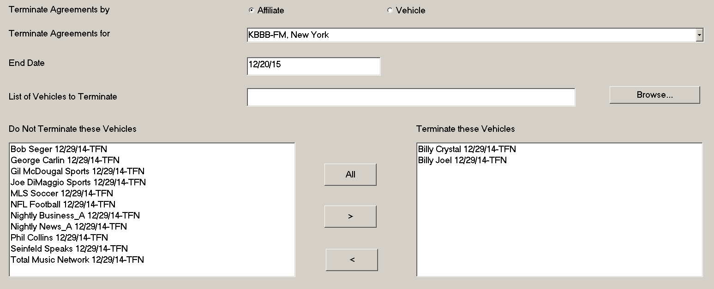
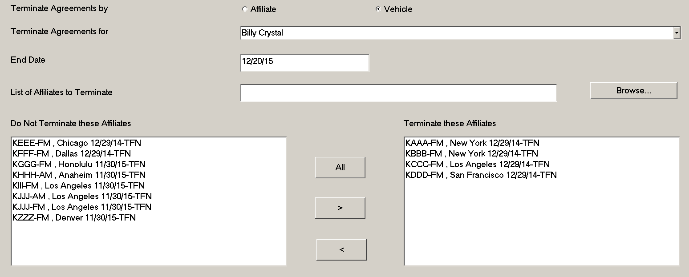

Fast End
To terminate multiple agreements at the same time, use the Fast End button, which is accessible from the Affiliate Agreements screen. Agreements can be terminated using Fast End by Affiliate (Station) or by Vehicle.
Terminating Agreements by Affiliate
To terminate agreements by Affiliate, select the “Affiliate” radio button from the top of the screen, then select the station to terminate agreements for from the list of stations in the “Terminate Agreements for” dropdown.
Enter the Sunday end date for the agreement in the End Date field.
There are two ways to choose what vehicles will have their agreements terminated. One way is to choose vehicles in the “Do Not Terminate these Vehicles” list and move them to the “Terminate these Vehicles” list on the right by either clicking the vehicle then clicking the right arrow, or by selecting multiple vehicles using “Ctrl-Click” or “Shift-Click” then clicking the right arrow, or by pressing the “All” button, or by double-clicking on a vehicle.

The other way to choose what vehicles to terminate is by using the Browse button to load an external file with a list of vehicles on it. If using an external file, the file must be in CSV or TXT format and must have a list of vehicle names on it.
Example of external file contents:
Billy Crystal
Billy Joel
George Carlin
Gil McDougal Sports
Joe DiMaggio Sports
If a vehicle has been placed in the “Terminate these vehicles” list by mistake, it is possible to move it back to the “Do Not Terminate these vehicles” list by clicking the vehicle and pressing the left arrow, or by double-clicking on the vehicle in the “Terminate these vehicles” list.
After the list of vehicles to terminate has been selected, press the Update button to run Fast End and terminate the selected agreements. Note that when using Fast End, any affiliate spots that exist after the end date will be removed from the affiliate system.
Terminating Agreements by Vehicle
To terminate agreements by vehicle using Fast End, select the “vehicle” radio button at the top of the Fast End screen, then select the vehicle that agreements will be terminated for from the “Terminate Agreements for” dropdown.
Enter the Sunday end date for the agreements in the End Date field.
There are two ways to choose what stations will have their agreements terminated. One way is to choose stations in the “Do Not Terminate these Affiliates” list and move them to the “Terminate these Affiliates” list on the right by either clicking the station then clicking the right arrow, or by selecting multiple stations using “Ctrl-Click” or “Shift-Click” then clicking the right arrow, or by pressing the “All” button, or by double-clicking on a station.

The other way to choose what stations to terminate agreements for is by using the Browse button to load an external file with a list of stations on it. If using an external file, the file must be in CSV or TXT format and must have a list of stations on it.
Example of external file contents:
KAAA-FM
KBBB-FM
KCCC-AM
KDDD-FM
If a station has been placed in the “Terminate these affiliates” list by mistake, it is possible to move it back to the “Do Not Terminate these affiliates” list by clicking the station and pressing the left arrow, or by double-clicking on the station.
After the list of affiliates to terminate has been selected, press the Update button to run Fast End and terminate the selected agreements. Note that when using Fast End, any affiliate spots that exist after the end date will be removed from the affiliate system.
The newly terminated agreements can be reviewed by running the Affiliate Agreements report and double-checking the agreements.